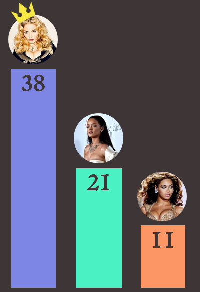
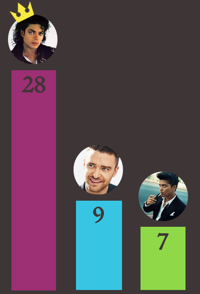
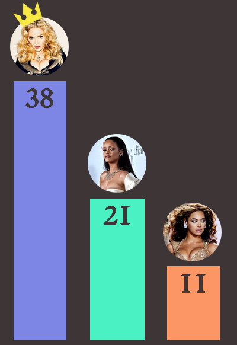
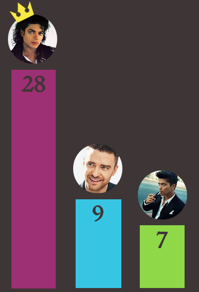
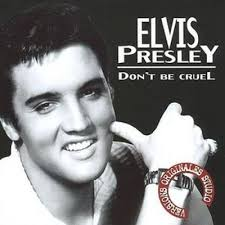
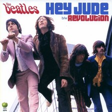
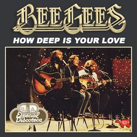
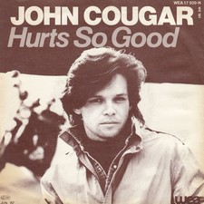

... Mais au fait Papy on écoutait quoi de ton temps ?
Sélectionnez votre année de naissance et découvrez le titre qui dominait les charts US à ta naissance !
Dans le monde impitoyable de la musique, difficile de rester au top bien longtemps. La reine incontestée de la Pop n’est autre que Madonna, qui tient le record du nombre de titres placés dans le top 10, avec 38 tubes classés. Cependant depuis les années 2000 la Madonne peine à conserver sa couronne et d’autres chanteuses tentent de lui dérober son trône. Si Beyoncé a pu apparaître comme une prétendante sérieuse, c’est aujourd’hui Rihanna qui se rapproche le plus du record de la Material Girl.
Nombre de semaines dans les charts par année
Nombre de chansons classées au top 10

Du côté des artistes masculins, tout le monde s’accorde à reconnaître Michael Jackson comme le Roi de la Pop, mais depuis la disparition tragique de ce dernier en 2009 aucun chanteur ne semble lui succéder. Justin Timberlake a pu apparaître comme un successeur possible, mais aujourd’hui les regards se tournent vers Bruno Mars qui a dominé les charts ces 5 dernières années.
Nombre de semaines dans les charts par année
Nombre de chansons classées au top 10

Let's Go !
Nombre de semaines dans les charts par année
Nombre de chansons classées au top 10

Nombre de semaines dans les charts par année
Nombre de chansons classées au top 10

Let's Go !
Les tubes entrant au Billboard y restent de plus en plus longtemps : depuis les années 60, le nombre moyen de semaines au top 40 des tubes y entrant a presque doublé !
Dans les années 1960, le tube qui est resté le plus longtemps dans le top 40 est The Twist de Chubby Checker. Il y est resté:39
semaines!
Dans les années 2000, I'm Yours de Jason Mraz y est resté: 76
semaines!
A cause de ces records de longévité, de moins en moins d'artistes peuvent accéder aux charts .. Cependant, ils sont toujours aussi nombreux (en proportion) à n'y mettre qu'un tube pendant toute leur carrière.
50%
des artistes qui sont un jour entrés dans le billboard n'ont sorti qu'un seul tube
Cepedant ces artistes ne sortant qu'un seul tube paraissent de moins en moins nombreux !
Les artistes composant un tube sont nombreux mais réussissent peu ... seulement 0,5% d'entre eux deviennent numéro 1 des charts. Certains de ces One-hit wonder sont cependant inoubliables (pour le meilleur et pour le pire .. à vous de juger avec le graphique ci-dessous !).



